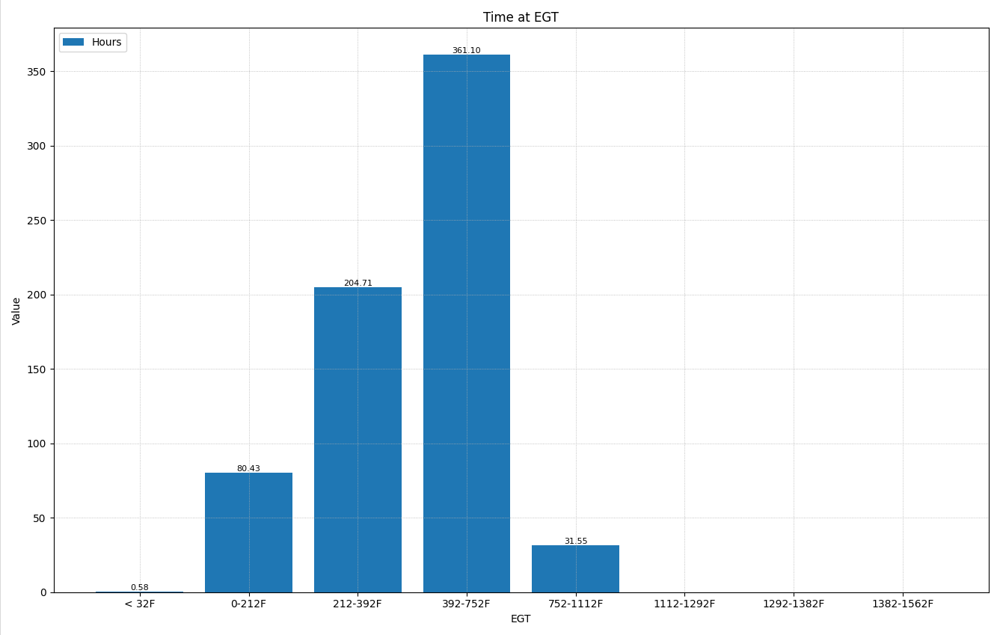

The Time at EGT chart displays the distribution of engine operating hours across different exhaust gas temperature ranges, revealing thermal operating patterns that directly impact engine health and emissions system performance.
This bar chart shows accumulated run time for each temperature band:
A healthy operating pattern typically shows the majority of time concentrated in the mid-to-upper temperature ranges, with minimal time in the lowest bands.
For most diesel engines, the ideal EGT operating range depends on load conditions:
| Operating Condition | Typical EGT Range | Notes |
|---|---|---|
| Idle | 300-480°F | Lower temps expected; prolonged idle is harmful |
| Light Load | 480-660°F | Acceptable for short periods |
| Normal Operation | 660-930°F | Ideal range for engine and aftertreatment health |
| Heavy Load | 930-1200°F | Normal under high demand; enables passive DPF regen |
| Maximum | 1200-1380°F | Safe limit; sustained operation may indicate issues |
Extended operation with low exhaust gas temperatures causes significant harm to diesel engines and emissions systems:
| Issue | Description |
|---|---|
| DPF Clogging | Diesel Particulate Filters require temperatures above 930°F for passive regeneration. Low EGTs cause soot accumulation, triggering frequent active regenerations or eventual filter failure. |
| Wet Stacking | Unburned fuel and soot condense in the exhaust system when combustion temperatures are too low, leading to black residue buildup, increased emissions, and potential engine damage. |
| DEF Crystallization | Diesel Exhaust Fluid can crystallize in the SCR injector and catalyst when temperatures are insufficient, reducing NOx conversion and causing component damage. |
| Carbon Deposits | Incomplete combustion leads to carbon buildup on injector tips, valves, turbocharger, and EGR components, reducing efficiency and causing premature wear. |
| Turbocharger Coking | Oil residue bakes onto turbo bearings and seals when not reaching proper operating temperature, leading to shaft wear and seal failure. |
| Cylinder Glazing | Low combustion pressure and temperature prevent piston rings from seating properly, polishing cylinder walls and reducing oil control. |
| Acid Formation | When EGTs drop below the dew point, sulfur compounds in the exhaust combine with moisture to form corrosive sulfuric acid that attacks exhaust components. |
When reviewing this chart, look for: